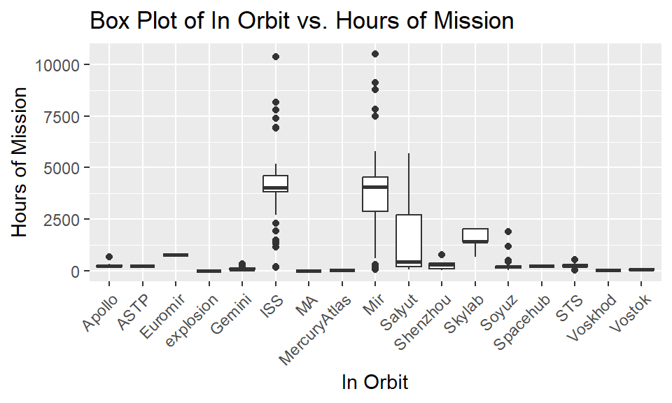
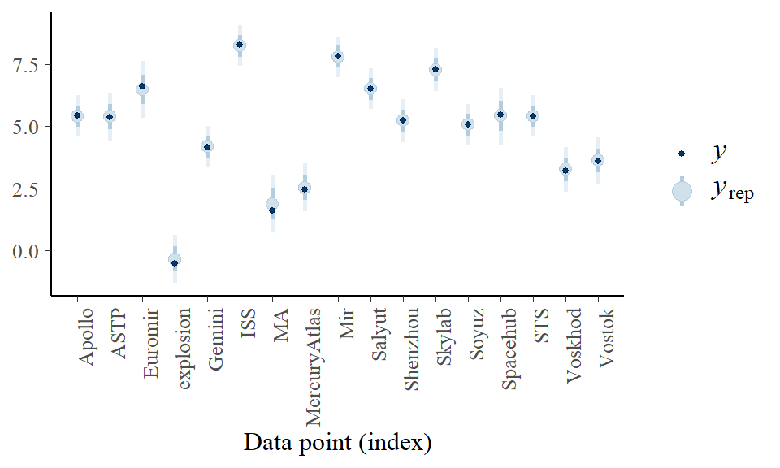
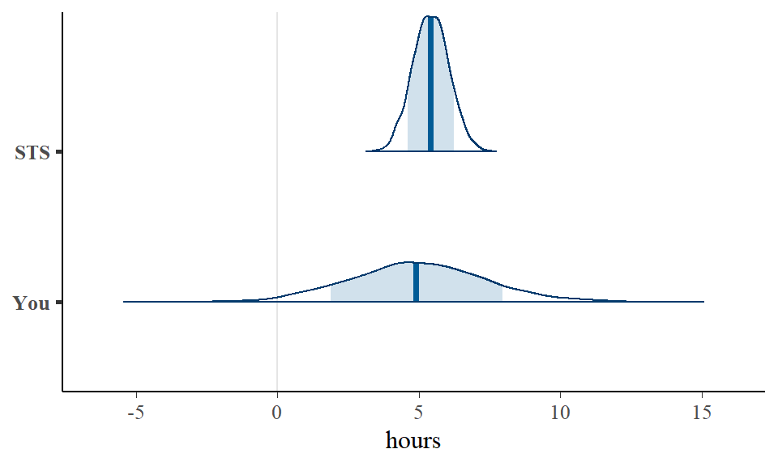
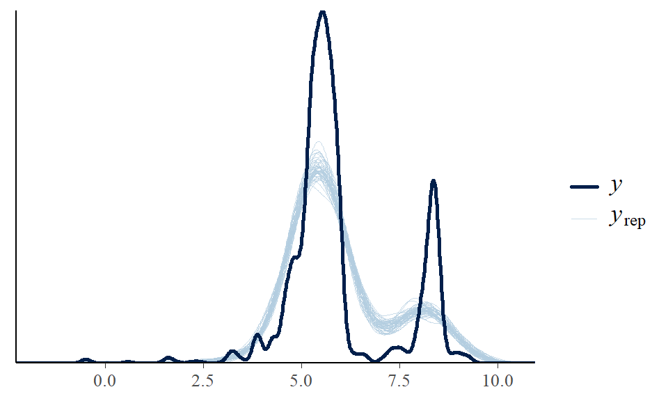

library(ggplot2)
library(bayesrules)
library(tidyverse)
library(dplyr)
library(rstanarm)
library(broom.mixed)
library(tidybayes)
library(bayesplot)
astronauts <- readr::read_csv('https://raw.githubusercontent.com/rfordatascience/tidytuesday/master/data/2020/2020-07-14/astronauts.csv')STAT 454 Final Project Report
1. Set up
2. Research Goals
Analyze the evolution of space missions over time, such as changes in the frequency of missions, duration (hours in mission). This could offer insights into how space exploration has evolved from the Cold War era to the present day. To answer the overarching research question, we would like to concentrate on the mission time total taken based on related variables.
3. Data Background
The dataset, meticulously compiled from various sources including NASA, Roscosmos, and enthusiast-driven websites, offers information of astronautical information. It encapsulates a wide array of data points ranging from the astronauts’ full names, gender, birth dates, and nationalities, to their military status and details regarding their selection programs. It is gathered and cleaned by a TidyTuesday contributor named Tom Mock.
Display information about the dataset
dim(astronauts) # Number of rows and columns
## [1] 1277 24
names(astronauts) # First few rows
## [1] "id" "number"
## [3] "nationwide_number" "name"
## [5] "original_name" "sex"
## [7] "year_of_birth" "nationality"
## [9] "military_civilian" "selection"
## [11] "year_of_selection" "mission_number"
## [13] "total_number_of_missions" "occupation"
## [15] "year_of_mission" "mission_title"
## [17] "ascend_shuttle" "in_orbit"
## [19] "descend_shuttle" "hours_mission"
## [21] "total_hrs_sum" "field21"
## [23] "eva_hrs_mission" "total_eva_hrs"
astronauts %>% head()
## # A tibble: 6 × 24
## id number nationwide_number name original_name sex year_of_birth
## <dbl> <dbl> <dbl> <chr> <chr> <chr> <dbl>
## 1 1 1 1 Gagarin, Yuri ГАГАРИН Юрий… male 1934
## 2 2 2 2 Titov, Gherm… ТИТОВ Герман… male 1935
## 3 3 3 1 Glenn, John … Glenn, John … male 1921
## 4 4 3 1 Glenn, John … Glenn, John … male 1921
## 5 5 4 2 Carpenter, M… Carpenter, M… male 1925
## 6 6 5 2 Nikolayev, A… НИКОЛАЕВ Анд… male 1929
## # ℹ 17 more variables: nationality <chr>, military_civilian <chr>,
## # selection <chr>, year_of_selection <dbl>, mission_number <dbl>,
## # total_number_of_missions <dbl>, occupation <chr>, year_of_mission <dbl>,
## # mission_title <chr>, ascend_shuttle <chr>, in_orbit <chr>,
## # descend_shuttle <chr>, hours_mission <dbl>, total_hrs_sum <dbl>,
## # field21 <dbl>, eva_hrs_mission <dbl>, total_eva_hrs <dbl>4. Cleaning the Data
Helpful plots
astronauts %>%
mutate(
year_of_mission = 10 * (year_of_mission %/% 10),
year_of_mission = factor(year_of_mission)
) %>%
ggplot(aes(year_of_mission, hours_mission,
fill = year_of_mission, color = year_of_mission
)) +
geom_boxplot(alpha = 0.2, size = 1.5, show.legend = FALSE) +
scale_y_log10() +
labs(x = NULL, y = "Duration of mission in hours")
# Scatter plot of career length vs. mission hours
ggplot(astronauts, aes(x = total_hrs_sum, y = hours_mission, color = in_orbit)) +
geom_point() +
labs(title = "Career Length vs. Mission Hours",
x = "Total Career Hours",
y = "Mission Duration (hours)") +
scale_color_manual(values = rainbow(20))
# box plot of in_orbit vs. hours_mission
ggplot(astronauts, aes(x = in_orbit, y = hours_mission)) +
geom_boxplot() +
labs(x = "In Orbit", y = "Hours of Mission", title = "Box Plot of In Orbit vs. Hours of Mission") +
theme(axis.text.x = element_text(angle = 45, hjust = 1))
5. Methodology
To meet the research question goal, we propose 2 solutions as below
- Model 1 is a hierachical model with only a single predictor
- Model 2 is a hierachical model with multiple predictors
5.1 Model 1
Constructing
# hiera_1 <- stan_glmer(
# log_hours_mission ~ (1 | in_orbit), data = log_transformed_astronauts,
# family = gaussian,
# chains = 4, iter = 1000*2, seed = 84735, refresh = 0)
# (complete_pooled, "../models/hierachical.rds")
hiera_1 <- readRDS("../models/hierachical.rds")Layer 1: Model of how individual observations vary within each in-orbit space craft group \(j\)
\(Y_{ij} | \mu_j, \sigma \sim N(\mu_j, \sigma_y^2)\)
Layer 2: Model of how means \(\mu_j\) vary between groups
\(\mu_j | \mu, \sigma_{\mu} \sim N(\mu, \sigma_{\mu}^2)\)
Layer 3: Priors on global parameters
\(\mu \sim N(m, s^2)\)
\(\sigma_y \sim \text{Exp}(l_y)\)
\(\sigma_{\mu} \sim \text{Exp}(l_{\mu})\)
Evaluation
astronaut_means <- log_transformed_astronauts %>%
group_by(in_orbit) %>%
summarize(count = n(), mission = mean(log_hours_mission))
set.seed(84735)
predictions_complete <- posterior_predict(
hiera_1, newdata = astronaut_means)
set.seed(84735)Posterior predictive check
ppc_intervals(astronaut_means$mission, yrep = predictions_complete,
prob_outer = 0.80) +
scale_x_continuous(
labels = astronaut_means$in_orbit,
breaks = 1:nrow(astronaut_means)) +
xaxis_text(angle = 90, hjust = 1)
The hierarchical predictive models are centered very near at the observed sample means.
pp_check(hiera_1)
Dual Peaks: Both the observed data (Y) and the replicated data (Y_rep) exhibit a bimodal distribution with two prominent peaks. This suggests that the data might be representing two distinct groups or conditions within the dataset. Alignment of Peaks: The peaks of the replicated data generally align with those of the observed data, which is a positive indication that the model captures the central tendencies of the data correctly for both groups
MAE score
prediction_summary(model = hiera_1, data =log_transformed_astronauts)
## mae mae_scaled within_50 within_95
## 1 0.29317 0.4529382 0.6632573 0.9472856On average, the log (of mission hours) deviate from the actual by 0.249.
Your mission time vs STS astronauts’
set.seed(84735)
predictions_complete_2 <- posterior_predict(
hiera_1,
newdata = data.frame(in_orbit = c("You", "STS")))
# Plot the posterior predictive models
mcmc_areas(predictions_complete_2, prob = 0.8) +
xlab("hours") +
scale_y_discrete(labels = c("You", "STS"))
The plot of your mission time has higher uncertainty since we do not have enough data on you to make good prediction.
5.2 Model 2
Constructing
# hiera <- stan_glmer(
# log_hours_mission ~
# (1 | in_orbit) +
# occupation +
# total_number_of_missions +
# year_of_selection +
# field21
#
# , data = log_transformed_astronauts,
# family = gaussian,
# chains = 4, iter = 1000*2, seed = 84735, refresh = 0)
# saveRDS(hiera, "../models/new_hierachical.rds")
hiera_2 <- readRDS("../models/new_hierachical.rds")In this model, we are modeling the log_hours_mission by occupation, total_num_of_missions, year_of_selection, and field 21 by allowing for random intercept by in-orbit.
- Model Formula:
Relationship within in-orbit spacecraft records \[ Y_{ij} \sim N(\mu_{ij}, \sigma^2_y) \\ \mu_{ij} = \beta_{0j} + \beta_{1}X_{ij}+\beta_{2}X_{ij}+...\\ \]
Variability between in-orbit spacecraft records \[ \beta_{0j} \mid \beta_0, \sigma_0 \sim N(\beta_0, \sigma^2_0) \\ \]
Evaluation
pp_check(hiera_2)
This plot shows identical shape to the posterior predictive check above although this model is more complicated than the one above.
# prediction summary
# hiera_predict_2 <- prediction_summary(model = hiera_2, data=log_transformed_astronauts)
#
# saveRDS(hiera_predict_2, "../other_states/hierachical_model_2_predict_cv")
hiera_predict_2 <- readRDS("../other_states/hierachical_model_2_predict")
hiera_predict_2
## mae mae_scaled within_50 within_95
## 1 0.3879057 0.6231922 0.5302911 0.9543666On average, the log (of mission hours) deviate from the actual by 0.388. This metric is higher than model 1 above.
6. Conclusion
Throughout this project, our primary goal was to analyze the evolution of space mission hours over time, with a specific focus on mission frequency, occupation and year of astronaut selection. By utilizing the data set, we were able to explore a variety of factors influencing the mission times of astronauts across different orbital missions.
Key Findings:
Model Performance: The first hierarchical model provided a good fit to the data, as evidenced by the posterior predictive checks. This model, which considered only the
in_orbitfactor as a predictor, had an average mean absolute error (MAE) of 0.249, suggesting that it was reasonably effective in predicting the hours of missions.Comparison of Models: Despite the simplicity of the first model, it performed better than the second, more complex model, which included additional predictors - occupation, number of missions, and year of selection. The second model had a slightly higher MAE of 0.388, indicating that adding more variables did not necessarily improve the predictive accuracy for our specific dataset.
Implications:
The findings suggest that while the hierarchical modeling approach is suitable for handling the data of space missions, the performance of the models varied. The first model, though simpler, performed good quality of perdiction as evidenced by the reasonable mean absolute error (MAE) and alignment in the posterior predictive checks. However, it did not creat a perfect fit, indicating room for improvement in capturing the variability within the data.
The second, more complex model did not improve on the predictive accuracy of the first, despite including additional predictors. The potential issue about overfitting and model selection based on the predictive relevance of variables rather than merely expanding complexity were detected.
These results highlight the challenges in statistical modeling of astronautical data, and the complexity of the dataset itself. Overfitting remains a critical concern, especially when the inclusion of multiple predictors does not necessarily lead to better predictions. Future research could take place on exploring alternative modeling or incorporating different sets of predictors that might better account for the variations observed in the data. Or including a prediction summary with CV would help. Additionally, expanding the dataset to include more recent and diverse missions could help in developing more suitable models.
Bibliography
Original data set from https://github.com/rfordatascience/tidytuesday/tree/master/data/2020/2020-07-14